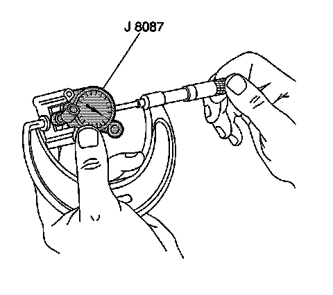
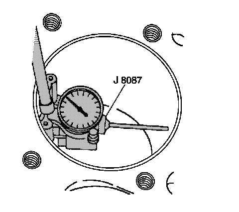

70. Piston, Connecting Rod, and Bearing Installation
Piston, Connecting Rod, and Bearing Installation
Tools Required
^ J 8037 Piston Ring Compressor
^ J 8087 Cylinder Bore Gage
^ J 41556 Connecting Rod Guide
^ J 45059 Angle Meter
Piston Selection
Important: Measurements of all components should be taken with the components at normal room temperature. For proper piston fit, the engine block cylinder bores must not have excessive wear or taper. A used piston, pin, and connecting rod assembly may be installed if, after inspection is within specifications.
1. With a micrometer at a right angle, measure the piston outside diameter (OD). Measure the diameter 43 mm (1.69 in) from the top of the piston. Refer to Engine Mechanical Specifications.
2. Record the piston OD.

3. Adjust the micrometer to the recorded piston OD.
4. Insert the J 8087 into the micrometer and zero the gage dial.

5. Using the J 8087, measure the cylinder bore inside diameter (ID). Measure at a point 64 mm (2.5 in) from the top of the cylinder.
6. Record the cylinder bore ID.
7. Subtract the piston OD from the cylinder bore ID in order to determine the piston-to-bore clearance. Refer to Engine Mechanical Specifications.
8. If the proper clearance cannot be obtained, select another piston and pin assembly and measure the clearances again. If the proper fit cannot be obtained, the cylinder bore may require honing for an oversize piston.
Piston, Pin, and Connecting Rod Installation

1. Lubricate the following components with clean engine oil:
^ Piston
^ Piston rings
^ Cylinder bore
^ Bearings and bearing surfaces
2. Install the bearings to the connecting rod and cap.
3. Position the oil control ring end gaps a minimum of 25 mm (1.0 in) from each other.
4. Position the compression ring end gaps 180 degrees opposite each other.

5. Install the J 41556 to the connecting rod.
6. Identify the proper installation direction of the piston and connecting rod assembly. When installing the piston and connecting rod assembly, the mark on the top of the piston (1) and the tab (2) on the side of the connecting rod should face the front of the engine.
7. Install the J 8037 onto the piston and compress the piston rings.
Important: The piston alignment mark MUST face the front of the engine block.
8. Install the piston, pin, and connecting rod assembly into the cylinder bore. Hold the piston ring compressor firmly against the engine block. Using a wooden hammer handle, lightly tap the top of the piston until all piston rings have entered the cylinder bore.
9. Use the J 41556 to guide the connecting rod onto the crankshaft journal.
10. Remove the J 41556 from the connecting rod.

Notice: Refer to Fastener Notice.
Important: The connecting rod and cap must be assembled with the mating surfaces properly aligned.
11. Install the bearing cap (103), bearing (104), and bolts (102).
1. Tighten the bolts a first pass to 20 N.m (15 lb ft).
2. Tighten the bolts a final pass to 75 degrees using the J 45059.
12. Measure the connecting rods for the proper side clearance. Refer to Engine Mechanical Specifications.